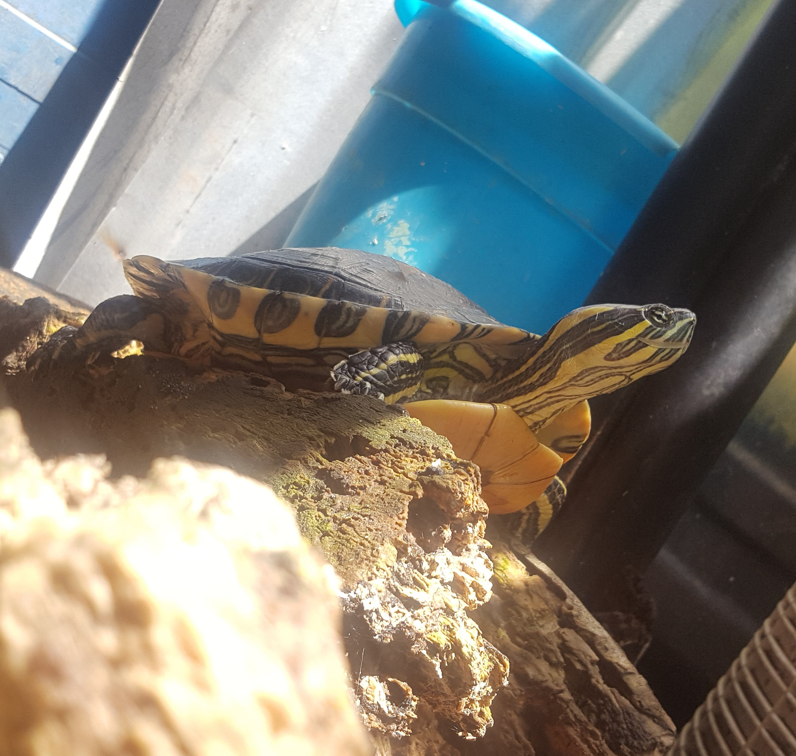
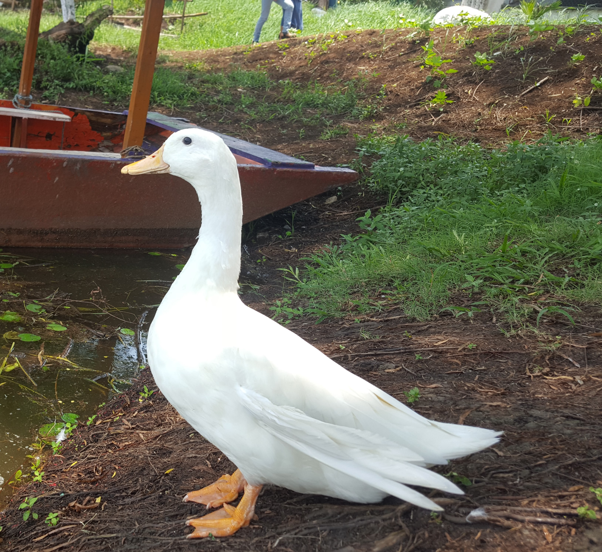
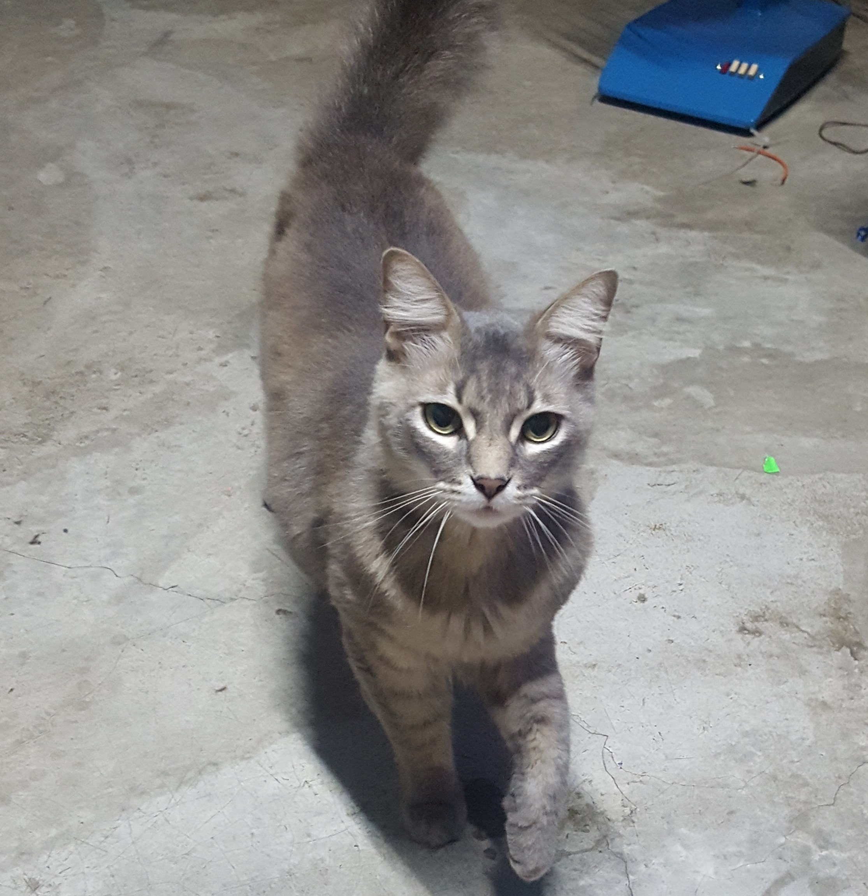
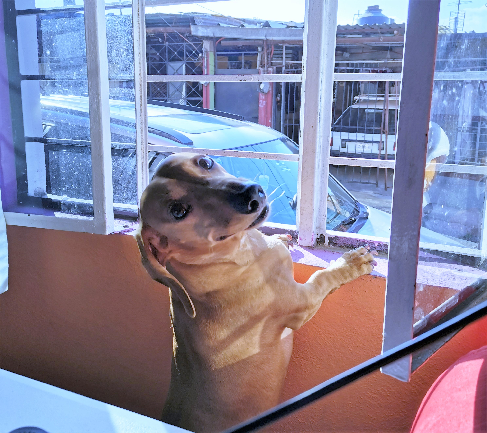
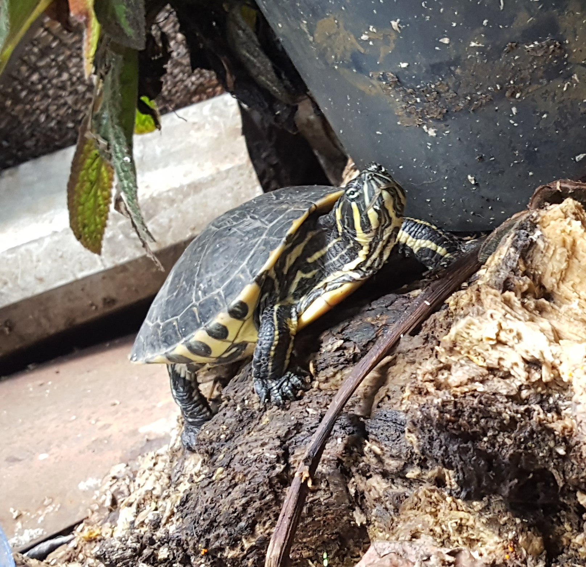
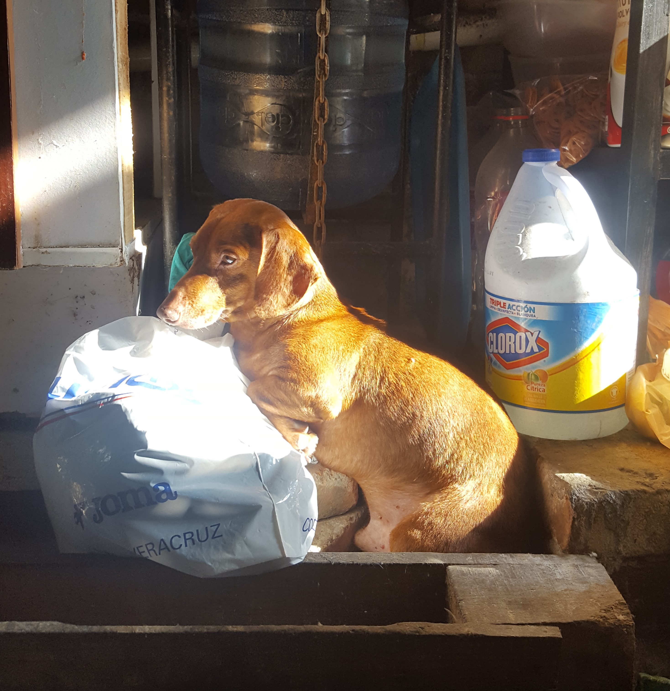
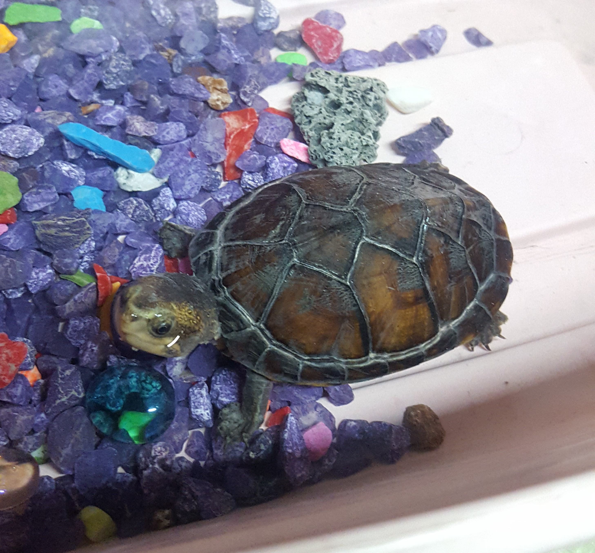

BIENVENIDOS A NUESTRA PÁGINA WEB
Esta página fue creada con el propósito de visualizar diferente tipo de mascotas y poder decidir que mascota se acopla a tu estilo de vida
Lo último de nuestro blog
Los animales necesitan cariño
Camina con tu mascota
Para mi, las mascotas no son animales de compañía, son parte de mi familia

Zoé

Paticio

Bubú

Sonic

Sally

Oddie
